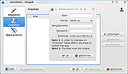
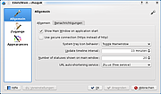
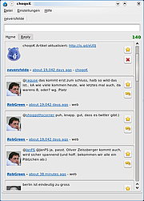
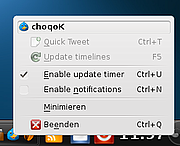

Choqok
Dieser Artikel wurde für die folgenden Ubuntu-Versionen getestet:
Ubuntu 14.04 Trusty Tahr
Zum Verständnis dieses Artikels sind folgende Seiten hilfreich:
Choqok  ist ein freier Micro-Blogging-Client für Twitter und StatusNet. Der Titel des Projekts stammt aus dem Persischen und bedeutet Sperling. Wie das "K" im Namen bereits verrät, ist das Programm insbesondere für KDE ausgelegt, erfreut sich aber auch unter anderen Desktopumgebungen zunehmender Beliebtheit.
ist ein freier Micro-Blogging-Client für Twitter und StatusNet. Der Titel des Projekts stammt aus dem Persischen und bedeutet Sperling. Wie das "K" im Namen bereits verrät, ist das Programm insbesondere für KDE ausgelegt, erfreut sich aber auch unter anderen Desktopumgebungen zunehmender Beliebtheit.
Hinweis:
Seit einer Änderung der API zum 12. Juni 2013 ist mindestens Choqok Version 1.4 für Twitter erforderlich. Die in früheren Choqok-Versionen enthaltene Unterstützung von identi.ca ist nicht mehr vorhanden.
Installation¶
Choqok kann aus den offiziellen Paketquellen installiert [1] werden.
choqok (universe)
 mit apturl
mit apturl
Paketliste zum Kopieren:
sudo apt-get install choqok
sudo aptitude install choqok
PPA¶
Adresszeile zum Hinzufügen des PPAs:
ppa:adilson/experimental
Hinweis!
Zusätzliche Fremdquellen können das System gefährden.
Ein PPA unterstützt nicht zwangsläufig alle Ubuntu-Versionen. Weitere Informationen sind der  PPA-Beschreibung des Eigentümers/Teams adilson zu entnehmen.
PPA-Beschreibung des Eigentümers/Teams adilson zu entnehmen.
Damit Pakete aus dem PPA genutzt werden können, müssen die Paketquellen neu eingelesen werden.
Nach dem Aktualisieren der Paketquellen erfolgt die Installation wie oben angegeben.
Manuell¶
Alternativ bieten die Choqok-Verantwortlichen im Downloadbereich  der offiziellen Projektseite den Quellcode zum Kompilieren an [3].
der offiziellen Projektseite den Quellcode zum Kompilieren an [3].
Einrichtung¶
|  |
| Zugänge |
|  |
| Einrichtung |
Bei Ubuntu-Varianten mit einem Anwendungsmenü findet man das Programm unter "Internet -> Choqok". Nach dem ersten Start erscheint ein Konfigurationsdialog, bei dem man aufgefordert wird, seine Twitter-Nutzerdaten einzugeben. Ist das erledigt ist das Programm fertig konfiguriert. Weitere Einstellungen können über "Einstellungen -> Choqok einrichten" im Hauptfenster erreicht werden.
Verhalten¶
Hinter dem Reiter "Allgemein" verbergen sich eine Reihe von Konfigurationsmöglichkeiten, unter anderem das Verhalten des Icons in der Kontrollleiste, das Update-Intervall und die Benachrichtigungsvarianten. Auch die Reiter "Kürzen von Adressen" und "Proxy" sind hier vorhanden; die Einstellungen sind selbserkärend.
Zugänge¶
Hat man die Möglichkeit zur Einrichtung eines Accounts nach dem ersten Start nicht genutzt oder möchte einen weiteren Zugang bestimmen, lässt sich dies in wenigen Schritten über "Zugänge" erledigen.
Erscheinungsbild¶
Ist man mit dem vordefinierten Aussehen nicht zufrieden, kann es hier an die eigenen Bedürfnisse angepasst werden, was auch die Darstellung von Emoticons oder die Reihenfolge der Tweets einschließt.
Module¶
Das Verhalten des Programms lässt sich auch durch entsprechende Module beeinflussen, die hier geschaltet werden können. Dazu gehören z.B. das An- und Abschalten der Vorschau von Bildern und Videos oder das Filterverhalten.
Benutzung¶
|  |
| Hauptfenster (Quelle / Lizenz: CC-BY-SA) |
{kind=link}
Eingabefeld¶
Im oberen Bereich des Hauptfensters befindet sich das Eingabefeld, in dem man die Kurznachrichten mit bis zu 140 Zeichen verfassen kann. Um eine Nachricht abzuschicken, muss man die Eingabetaste ⏎ drücken, da ein Absenden-Button bislang fehlt.
Timeline¶
Die Timeline zeigt eine Übersicht der neuen "Tweets" und ist in "Home" und "Reply" untergliedert. Der Reply-Bereich ist den Nachrichten vorbehalten, die unmittelbar an den genutzten Account gerichtet worden sind. Sehr hilfreich sind die beiden Icons zur Rechten der Nachrichten, über die man Beiträge zu den Favoriten hinzufügen oder direkt beantworten kann.
Quick Tweet¶
Um das Senden einer Nachricht noch schneller zu gestalten, haben die Entwickler die Funktion "Quick Tweet" integriert, die man unkompliziert über das Symbol in der Kontrolleiste erreichen kann. Es öffnet sich ein kleines Fenster für einen spontanen "Tweet", ohne dass das Hauptfenster erscheint. Noch schneller startet man dieses Eingabefeld mit der Tastenkombination Strg + Windows + T .
Funktionsübersicht¶
|  |
| Steuerung über Kontrollleiste |
Neben den grundlegenden Funktionen bietet Choqok eine Reihe weiterer nützlicher Features:
Unterstützung von selbst gehosteten StatusNet
WebsitesVerwaltung mehrerer Accounts
Unterstützung von URL-Kürzern (unter anderem is.gd
und goog.gl )Übersichtlicher Diskussionsverlauf durch "In Reply To"-Ansicht
Senden und Empfangen direkter Nachrichten
KWallet-Integration
Links¶
Choqok – der vielleicht beste Twitter-Client für Linux
 - Blogbeitrag, 04/2009
- Blogbeitrag, 04/2009Twitter
 Programmübersicht
Programmübersicht
- Erstellt mit Inyoka
-
 2004 – 2017 ubuntuusers.de • Einige Rechte vorbehalten
2004 – 2017 ubuntuusers.de • Einige Rechte vorbehalten
Lizenz • Kontakt • Datenschutz • Impressum • Serverstatus -
Serverhousing gespendet von